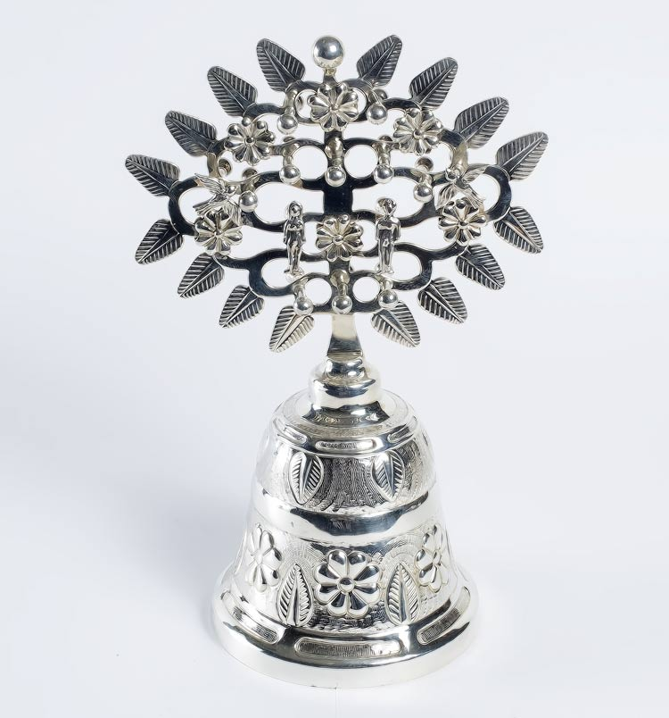
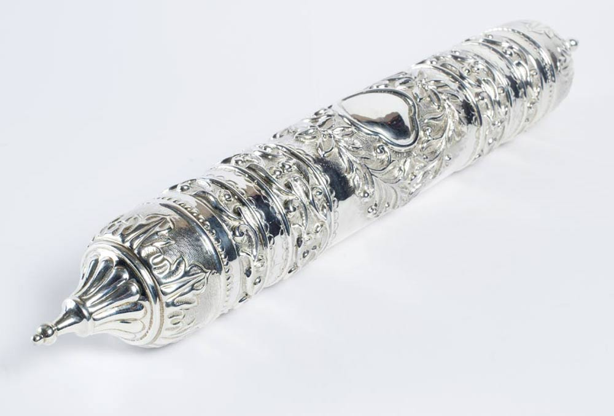
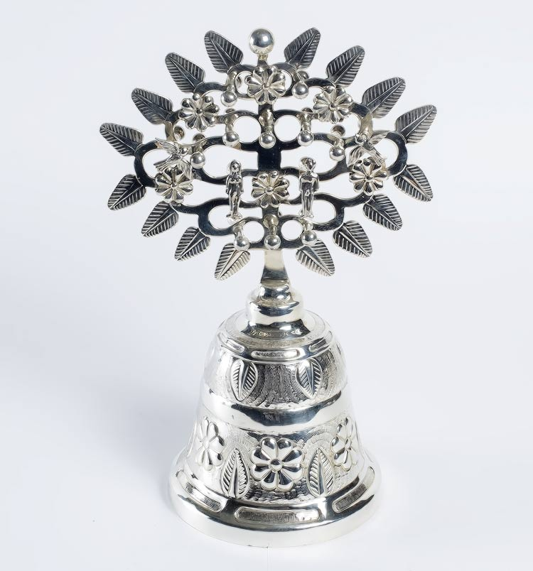
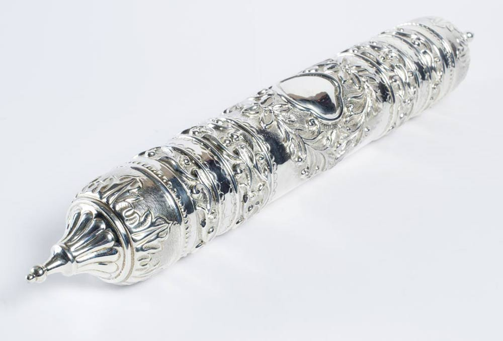

Quienes Somos
1Años de experiencia nos respaldan desde 1942.
Plata Villa Polanco cuenta con muchos años de experiencia que respaldan los productos que en ella se ofrecen desde su fundación en 1942. Esta Casa se estableció hace treinta y cinco años en Polanco, ubicada a una cuadra de la zona hotelera, haciendo de éste un lugar privilegiado para que extranjeros y nacionales adquieran piezas de excelente calidad.
2Diseños y Grabados
Los diseños, de todo tipo, se realizan en plata Sterling 0.925 de ley dentro de los talleres de Plata Villa Polanco, además cuenta con el servicio de manufactura de piezas especiales, de grabado con tecnología de punta y, por supuesto, de la amplia gama de joyería.
3Satisfacción al cliente
Son pocos los comercios que se preocupan por la satisfacción del cliente, por lo que Plata Villa Polanco se caracteriza por su inmejorable atención a todo aquel que visite este espacio, recibidos personalmente por la propietaria. En cuanto al costo de las piezas, la Casa mantiene la mejor relación calidad-precio en el mercado, ya que se está pagando por un trabajo original y de gusto exquisito. Así, la única preocupación del comprador será la elección de la mejor joya que Plata Villa Polanco tiene en su colección.
Galeria

 


